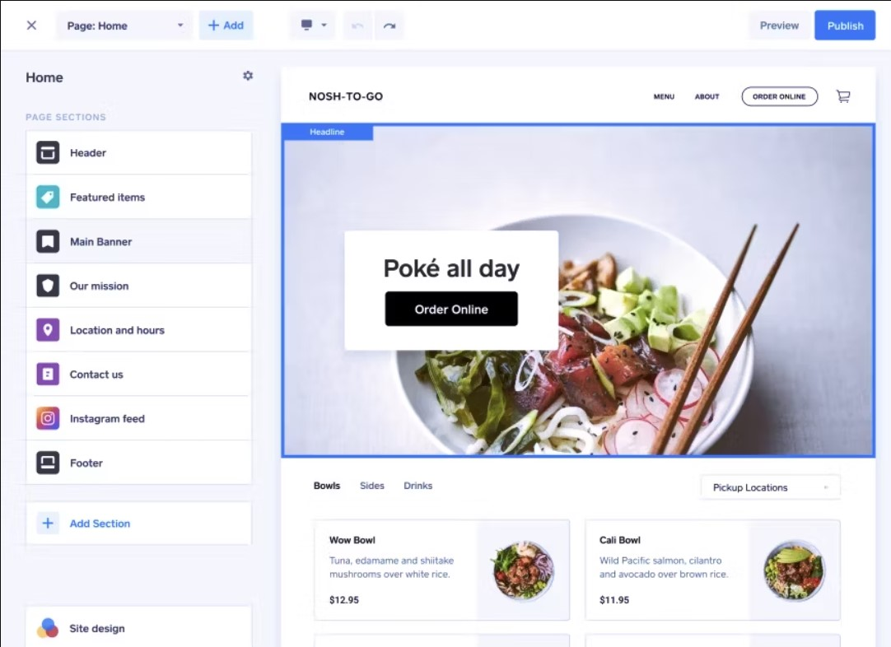

Je m'appelle MonganJosué Saint-Martin Junior. J'ai 18 ans et je suis célibataire.
Je suis un actuellement étudiant à Gomycode. Je suis passionné de l'informatique. Calme et jovial, j'aime aussi la lecture.
J'apprécie particulièrement les romans policiers et les histoires d'aventure. Je sais également joué un peu de piano.
Mon rêve est devenir un jour un expert en informatique et de pouvoir pourquoi pas faire une découverte qui permettrait
de révolutionner ce domaine.
Compétences
Hardskills
Langage C++
Le langage C++ étant un langage très proche de la machine et assez versatile, il est très demandé. Malgré sa difficulté d'apprentissage
pur beaucoup, j'ai réussi à acquérir des compétences dans la proogrammation en C++. J'ai d'ailleurs un niveau intermédiaire dans ce
domaine. Cela se réflète également à travers les projets que j'ai réalisé.
Développement Web
J'ai également quelques connaissances en développement web front-end. Je maitrise le html et le CSS.
Vous pourrez trouver le voir dans les projets que j'ai réalisé.
Softskills
Résolution de problèmes
J'ai une certaine facilité à analyser les situations, à identifier les problèmes et à proposer des solutions appropriées.
Ma nature calme me permet également d'analyser les problèmes avec patience afin de trouver la meilleure solution.
Communication
Je réussis à communiquer avec les autres et à transmettre mes idées. En plus, ma maitrise de la langue française et aussi
de celle anglaise me donne une ceraine flexibilité lors des échanges.
Le travail en équipe
Travailler efficacement avec d'autres personnes est aussi un autre de mes atout. D'ailleurs mes capacité de communication m'aident
à collaborer et à contribuer à un environnement de travail positif.
Porfolio
Projets C++
Voici un de mes projets en C++. Il s'agit d'un jeu de bataille aérienne. Pour pouvoir le faire, j'ai dû mettre en jeu plusieurs compétences
C++ notamment les notions de programmation Orienté Objet. Je vous insère ci-dessous un aperçu du jeu.
Projets Web
J'ai également développé une page web dont je vous donne une image réduite ci-dessous. J'ai participé à la partie front-end en mettant ainsi à profit
mes connaissances en html et en CSS.

Mon CV
Voici ici mon cv. Pour davantage d'informations sur moi veuillez vous rendre ici.